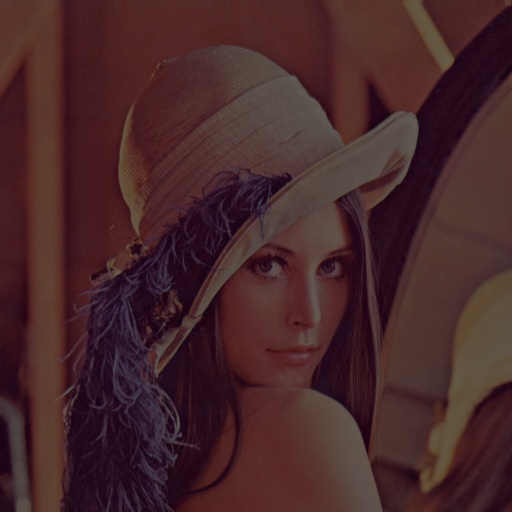

ASUS UGen AI League · Stage I Proposal
Creator AI Battlefield Lightning · ASUS UGen300 Onsite Track
Bryan Seah · Singapore Management University
github.com/hongyime/shotsift
Real numbers, from my own archive (02 CLIENT):
Every event ends the same way: thousands of frames, one laptop, an evening gone to culling — while the client's social team waits for photos that arrive the next day.
Every culling tool works after the shoot, on the photographer's laptop. Nothing helps during the event, when the client's comms team needs content.
Several photographers cover one event; frames scatter across memory cards and get merged by hand. Nobody's photos are in one place until long after.
Corporate clients don't want attendee faces uploaded to a cloud service — a real PDPA concern. Cloud culling is a contractual problem, not a convenience.
"I shot 2,000 frames tonight and I'll spend tomorrow morning culling instead of booking the next job."
"The keynote ended two hours ago and we have nothing to post. Our moment is gone."
"I coordinate three shooters and the deliverables land as three separate piles I have to reconcile."
| AfterShoot | Narrative Select | FilterPixel | ShotSift | |
|---|---|---|---|---|
| When | After shoot | After shoot | After shoot | During the shoot |
| Where it runs | On-device | On-device | Cloud | On-device (edge) |
| Multi-shooter merge | No | No | No | Yes |
| Personal taste | AI profiles¹ | AI presets¹ | Generic | On-device taste model² |
¹ Requires 1,500–5,000 previously edited images in a Lightroom catalog (per vendor sites).
² Stage II roadmap — trained on-device on the photographer's own keep/reject decisions, no cloud.
Competitor data from vendor websites, verified Oct 2026 (see appendix A3). No tool above processes frames during the shoot.
An edge appliance — host + ASUS UGen300 — that scores every frame as it lands and writes the cull into XMP sidecars your editor already understands.
Plug in the box and a venue-local access point. Cameras connect over FTP-over-Wi-Fi — the feature most pro bodies already have. Card reader as fallback.
Frames arrive as they are shot. The client's social team browses a live gallery on the local network — captioned picks, while the event is still running.
XMP sidecars carry star ratings, labels and keywords next to the RAWs. Import to Lightroom or Capture One — the cull is already there. Event data auto-deletes.
Generic "aesthetic" scores don't match how professionals choose. A taste model trained on your own decisions culls the way you cull.
Honest framing: taste-model training is Stage II work. Stage I demonstrates the full pipeline with heuristic weights (focus + exposure). No rating history was available for Stage I — and none was fabricated.
SCRFD face detection → ArcFace embeddings (identity clustering) · 68-pt landmarks → blink check · CLIP image encoder → semantic + aesthetic
Qwen2-VL-2B → captions + keywords · Qwen2-1.5B function-calling → natural-language search ("speaker laughing with the CEO")
One UGen300, shared by round-robin scheduling. Custom logic stays on the CPU — no Hailo model compilation required.
All venue-local. Bring your own access point — never depend on crowded house Wi-Fi. Nothing leaves the venue.
Outputs: XMP sidecars · FastAPI LAN gallery · SQLite · Docker Compose · event data wiped after delivery
| Model | Task | Runs on | Source |
|---|---|---|---|
| SCRFD | Face detection | Hailo-10H | Hailo Model Zoo |
| ArcFace | Identity embeddings | Hailo-10H | Hailo Model Zoo |
| 3DDFA | 68-pt landmarks → blink | Hailo-10H | Hailo Model Zoo |
| CLIP (image) | Semantic + aesthetic | Hailo-10H | Hailo Model Zoo |
| Qwen2-VL-2B | Captions + keywords | Hailo-10H | Hailo GenAI Zoo |
| Qwen2-1.5B-FC | Natural-language search | Hailo-10H | Hailo GenAI Zoo |
| Heuristics + taste head | Focus / exposure / burst / keeper | CPU | Custom (this repo) |
Only stock precompiled models run on the Hailo. Custom logic stays on CPU — no custom compilation required. Strong feasibility signal for a 4-week build.
Biometric data is personal data under Singapore's PDPA — ShotSift is architected so there is nothing to breach.

Demonstrated: burst grouping · focus scoring · keeper ranking · star ratings · XMP sidecars · HTML gallery — verified end-to-end on a 3-frame burst.
Stage II: face detection · blink detection · CLIP · captions · search · taste model.
Targets for Stage II validation, not claims:
| Metric | Target / method |
|---|---|
| Shutter-to-gallery latency | Measured capture-timestamp → gallery render |
| Sustained throughput | FPS under multi-shooter burst load |
| Taste-model precision@K | vs. historical picks, held out by whole event |
| Duplicate collapse rate | Share of frames folded into burst groups |
| Power | Watts at the wall |
| Time saved | Manual cull vs. ShotSift-assisted, same event |
Port Tier 1 to the Hailo-10H. Benchmark per-model latency; confirm zoo model versions against HailoRT.
GenAI tier (Qwen2-VL-2B, 1.5B-FC) + round-robin device sharing across all models.
Live gallery, XMP writer, multi-camera FTP ingest. Docker Compose packaging.
Validation runs on two real shoots. Documentation, demo rehearsal, submission.
| Risk | Mitigation |
|---|---|
| Model missing from Hailo-10H zoo | CPU fallback via ONNX Runtime; noted in deck |
| VLM latency (seconds/image) | Background queue; captions for top picks only |
| Venue Wi-Fi unreliability | Own access point; Ethernet for the host |
| Taste-model overfitting | Event-level holdout + generic baseline comparison |
| Hardware arrival timing | Host-agnostic Docker build; prototype runs on any laptop |
Per-event rental through AV and event-production houses — a line item on the kit list. No consumer sales cycle; I know this world.
Per-seat subscription for photography studios running multi-shooter events — taste model + gallery hosting per seat.
Reference software for a ProArt laptop + UGen300 creator bundle. A product ASUS's own business could sell.
▸ github.com/hongyime/shotsift — prototype + docs
▸ Demo video (unlisted YouTube link in submission)
▸ Hailo Model Zoo — hailo.ai/developer-zone (SCRFD, ArcFace, CLIP)
▸ Hailo GenAI Zoo (Qwen2-VL-2B, Qwen2-1.5B-FC)
▸ Deng et al., "ArcFace" (CVPR 2019); Zhang et al., SCRFD
▸ Radford et al., "CLIP" (ICML 2021)
▸ Qwen2-VL technical report (2024)
▸ McInnes et al., HDBSCAN (2017)
▸ Adobe XMP Specification
▸ PDPC Singapore — guidance on biometric data
▸ aftershoot.com · narrative.so · filterpixel.com (competitor data, Oct 2026)
Creator AILightning · UGen300Onsite
ShotSift. The cull happens while you shoot.
I consent to being photographed and appearing in the ShotSift Stage I demo video for the ASUS UGen AI League. I understand the video will be uploaded as an unlisted YouTube link shared with competition judges. My images will be processed on-device only and deleted after the event. I may withdraw consent before submission by contacting the photographer.
Name: _______________ Signature: _______________ Date: _______________
shotsift/
├── src/
│ ├── ingest/ # discovery, EXIF + embedded rating extraction
│ ├── vision/ # face detect, focus / exposure / blink scoring
│ ├── scoring/ # burst grouping, keeper ranking
│ ├── output/ # XMP writer, HTML gallery
│ └── main.py # CLI entry point
├── tests/ # 4 unit tests, all passing
├── demo/ # burst samples + demo video
├── deck/ # this deck
└── docs/ # architecture, video script, deck outlinegithub.com/hongyime/shotsift · public